Hedge | BrE | AmE |
|---|---|---|
kindof | 181 | 655 |
sortof | 177 | 67 |
8 Basic Inferential Statistics
What This Session Covers
This session introduces the first inferential statistical tests - procedures for deciding whether observed differences are likely to reflect real effects.
- The chi-square test - testing associations between categorical variables, assumptions, and effect sizes (Cramér’s V / phi)
- Student’s t-test - comparing two group means, assumptions, and Cohen’s d
- The Mann-Whitney U-test - the non-parametric alternative when t-test assumptions are violated
- Reporting results - how to report test statistics, degrees of freedom, p-values, and effect sizes
This tutorial introduces basic inferential procedures for null-hypothesis hypothesis testing. AS such, this tutorial aims at discussing basic concepts of inferential statistics, explaining the conceptual underpinnings of the most commonly used tests (such as t-tests and \(\chi^2\)-tests), and showcasing how to implement these statistical tests in R.
We start the tutorial by getting to know the most common test used in the language sciences to perform null-hypothesis hypothesis testing: (Pearsons’s) \(\chi\)2 test. The next part of this tutorial then focuses on independent and dependent t-tests which are the most basic parametric test while the last part of the tutorial introduces the Mann-Whitney U -test which is a rank-based test.
8.1 (Pearsons’s) Chi-Square Test
Key concept: Test statistic, degrees of freedom, and effect size
Every significance test produces a test statistic (χ², t, U, …) that quantifies how far the data deviate from what the null hypothesis predicts, and the degrees of freedom describe how much independent information the data contain. Together they yield the p-value. But significance alone is not enough: with large samples, even trivially small differences become significant. Always complement the p-value with an effect size (e.g. Cramér’s V for chi-square, Cohen’s d for t-tests), which quantifies how large - and thus how meaningful - the effect is.
One of the most frequently used statistical test in linguistics is the \(\chi\)2 test (or Pearsons’s chi-square test, chi-squared test, or chi-square test). We will use a simple, practical example to explore how this test works. In this example, we will test whether speakers of American English (AmE) and speakers of British English (BrE) differ in their use of the near-synonyms sort of and kind of as in “He’s sort of stupid” and “He’s kind of stupid”. As a first step, we formulate the hypothesis that we want to test (H1) and its null hypothesis (H0). The alternative- or test hypothesis reads:
H1: Speakers of AmE and BrE differ with respect to their preference for sort of and kind of.
while the Null Hypothesis (H0) states
H0: Speakers of AmE and BrE do not differ with respect to their preference for sort of and kind of.
The H0 claims the non-existence of something (which is the more conservative position) and in our example the non-existence of a correlation between variety of English and the use of sort of and kind of. The question now arises what has to be the case in order to reject the H0 in favor of the H1.
To answer this question, we require information about the probability of error, i.e. the probability that the H0 does indeed hold for the entire population. Before performing the chi-square test, we follow the convention that the required significance level is 5 percent. In other words, we will reject the H0 if the likelihood for the H\(_{0}\) being true is less than 5 percent given the distribution of the data. In that case, i.e. in case that the likelihood for the H0 being true is less than 5 percent, we consider the result of the chi-square test as statistically significant. This means that the observed distribution makes it very unlikely that there is no correlation between the variety of English and the use of sort of and kind of.
Let us now assume that we have performed a search for sort of and kind of in two corpora representing American and British English and that we have obtained the following frequencies:
In a first step, we now have to calculate the row and column sums of our table.
Hedge | BrE | AmE | Total |
|---|---|---|---|
kindof | 181 | 655 | 836 |
sortof | 177 | 67 | 244 |
Total | 358 | 722 | 1,080 |
Next, we calculate, the values that would have expected if there was no correlation between variety of English and the use of sort of and kind of. In order to get these expected frequencies, we apply the equation below to all cells in our table.
\[\begin{equation} \frac{Column total*Row total}{Overall total} \end{equation}\]
In our example this means that for the cell with [+]BrE [+]kindof we get:
\[\begin{equation} \frac{836*358}{1080} = \frac{299288}{1080} = 277.1185 \end{equation}\]
For the entire table this means we get the following expected values:
Hedge | BrE | AmE | Total |
|---|---|---|---|
kindof | 277.11850 | 558.8815 | 836 |
sortof | 80.88148 | 163.1185 | 244 |
Total | 358.00000 | 722.0000 | 1,080 |
In a next step, we calculate the contribution of each cell to the overall \(\chi\)2 value (\(\chi\)2 contribution). To get \(\chi\)2 contribution for each cell, we apply the equation below to each cell.
\[\begin{equation} \frac{(observed – expected)^{2}}{expected} \end{equation}\]
In our example this means that for the cell with [+]BrE [+]kindof we get:
\[\begin{equation} \frac{(181 – 277.1185)^{2}}{277.1185} = \frac{-96.1185^{2}}{277.1185} = \frac{9238.766}{277.1185} = 33.33868 \end{equation}\]
For the entire table this means we get the following \(\chi^{2}\) values:
Hedge | BrE | AmE | Total |
|---|---|---|---|
kindof | 33.33869 | 16.53082 | 49.86951 |
sortof | 114.22602 | 56.63839 | 170.86440 |
Total | 147.56470 | 73.16921 | 220.73390 |
The sum of \(\chi\)2 contributions in our example is 220.7339. To see if this value is statistically significant, we need to calculate the degrees of freedom because the \(\chi\) distribution differs across degrees of freedom. Degrees of freedom are calculated according to the equation below.
\[\begin{equation} DF = (rows -1) * (columns – 1) = (2-1) * (2-1) = 1 * 1 = 1 \end{equation}\]
In a last step, we check whether the \(\chi\)2 value that we have calculated is higher than a critical value (in which case the correlation in our table is significant). Degrees of freedom are relevant here because the critical values are dependent upon the degrees of freedom: the more degrees of freedom, the higher the critical value, i.e. the harder it is to breach the level of significance.
But why do the degrees of freedom matter?
The simple answer is that the \(\chi\)-distribution differs based on the degrees of freedom which then affects the probability of a \(\chi\)-value. Have a look at the graph below to see how the degrees of freedom affect the shape of the \(\chi\)-distribution.
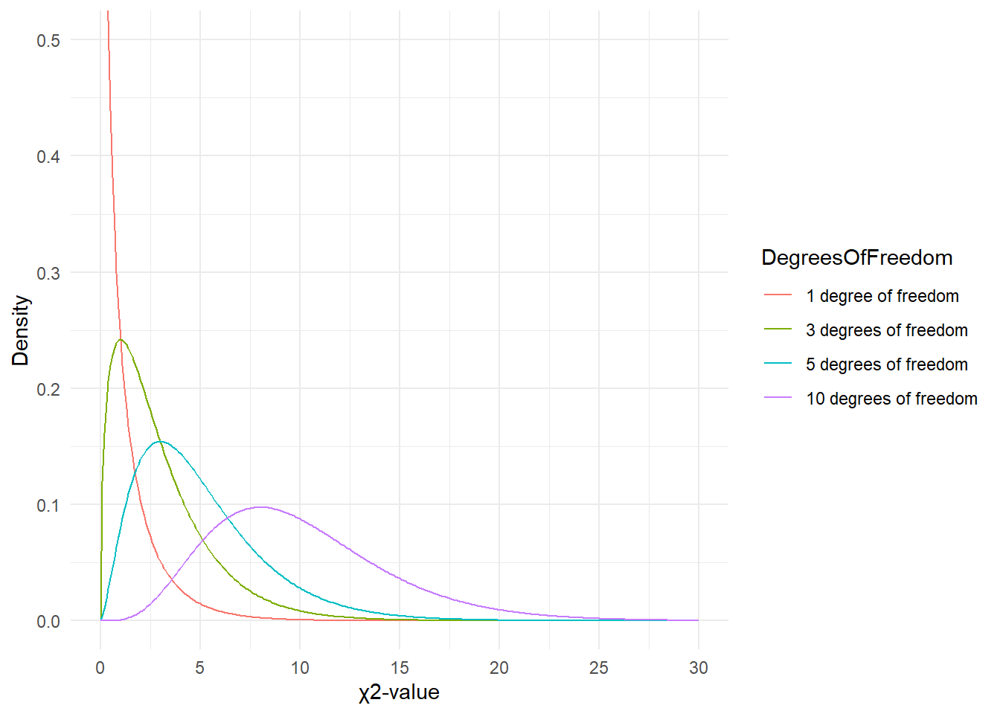
Since there is only 1 degree of freedom in our case, we need to check the critical \(\chi\)-value foe 1 degree of freedom and a significance level of \(\alpha\) = 5 percent.
qchisq(p=.05, df=1, lower.tail=FALSE)[1] 3.841459What does this critical value mean?
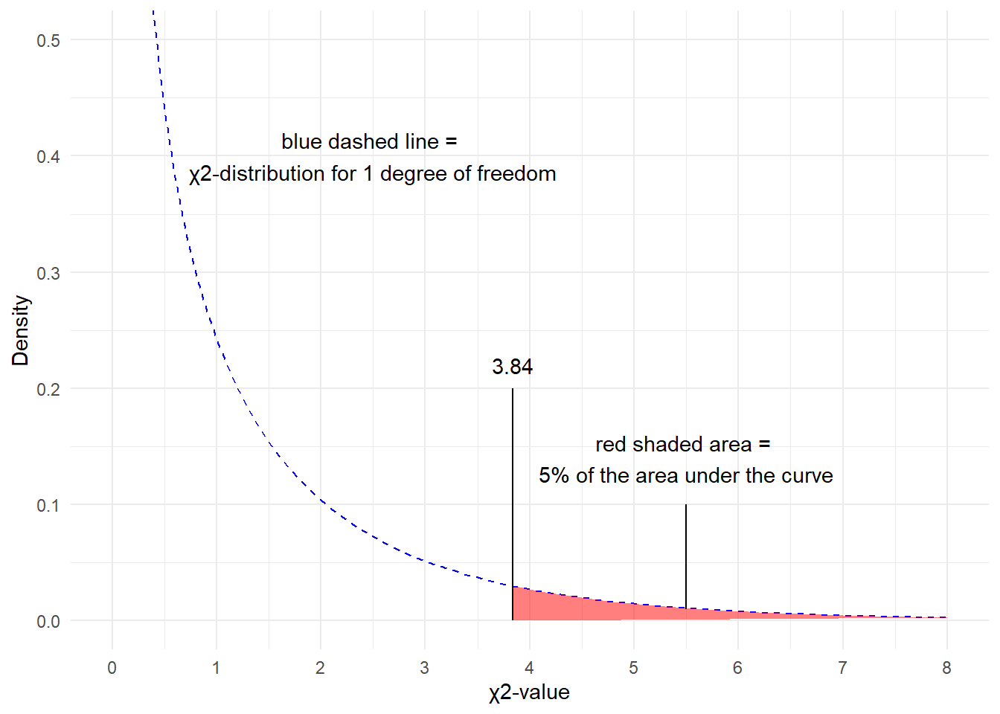
The critical values shows that if we get a value higher than the critical value, we have to reject our H0 and can consider our result to be statistically significant because the likelihood of obtaining our or a more extreme result is lower than 5%.
You can also check the critical values in the table below. as we are dealing with 1 degree of freedom, only the first column in the table of critical values below is relevant for us.
DF | p<.05 | p<.01 | p<.001 |
|---|---|---|---|
1 | 3.84 | 6.64 | 10.83 |
2 | 5.99 | 9.21 | 13.82 |
3 | 7.82 | 11.35 | 16.27 |
4 | 9.49 | 13.28 | 18.47 |
5 | 11.07 | 15.09 | 20.52 |
Since the \(\chi\)2 value that we have calculated is much higher than the critical value provided for p<.05, we can reject the H0 and may now claim that speakers of AmE and BrE differ with respect to their preference for sort of and kind of.
Before we summarize the results, we will calculate the effect size which is a measure for how strong the correlations are.
8.1.1 Effect Sizes in Chi-Square
Effect sizes are important because they correlations may be highly significant but the effect between variables can be extremely weak. The effect size is therefore a measure how strong the correlation or the explanatory and predictive power between variables is.
The effect size measure for \(\chi\)2 tests can be either the \(\phi\)-coefficient (phi-coefficient) or Cramer’s \(\phi\) (Cramer’s phi). The \(\phi\)-coefficient is used when dealing with 2x2 tables while Cramer’s \(\phi\) is used when dealing with tables with more than 4 cells. The \(\phi\) coefficient can be calculated by using the equation below (N = overall sample size).
\[\begin{equation} \phi = \sqrt{\frac{\chi^{2}}{N}} \end{equation}\]
In our case, this means:
\[\begin{equation} \phi = \sqrt{\frac{220.7339}{1080}} = \sqrt{0.2043832} = 0.4520876 \end{equation}\]
The \(\phi\) coefficient varies between 0 (no effect) and 1 (perfect correlation). For the division into weak, moderate and strong effects one can follow the division for \(\omega\) (small omega), so that with values beginning with .1 represent weak, values between 0.3 and .5 represent moderate and values above .5 represent strong effects (Bühner and Ziegler 2009, 266). So, in this example we are dealing with a medium-sized effect/correlation.
8.1.2 Chi-Square in R
Before we summarize the results, we will see how to perform a chi-square test in R. In addition to what we have done above, we will also visualize the data. To begin with, we will have a look at the data set (which is the same data we have used above).
Hedge | BrE | AmE |
|---|---|---|
kindof | 181 | 655 |
sortof | 177 | 67 |
We will now visualize the data with an association. Bars above the dashed line indicate that a feature combination occurs more frequently than expected by chance. The width of the bars indicates the frequency of the feature combination.
assocplot(as.matrix(chidata)) # association plot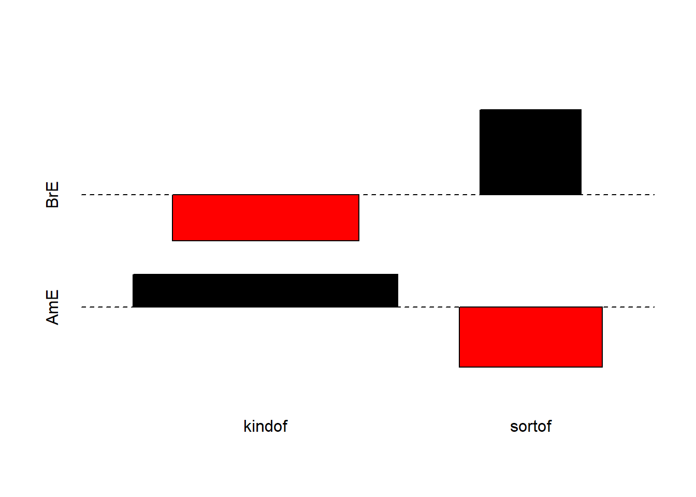
The fact that the bars are distributed complimentary (top left red and below bar; top right black above bar; bottom left black above bar; bottom right red below bar) indicates that the use of sort of and kind of differs across AmE and BrE. We will check whether the mosaic plot confirms this impression.
mosaicplot(chidata, shade = TRUE, type = "pearson", main = "") # mosaic plot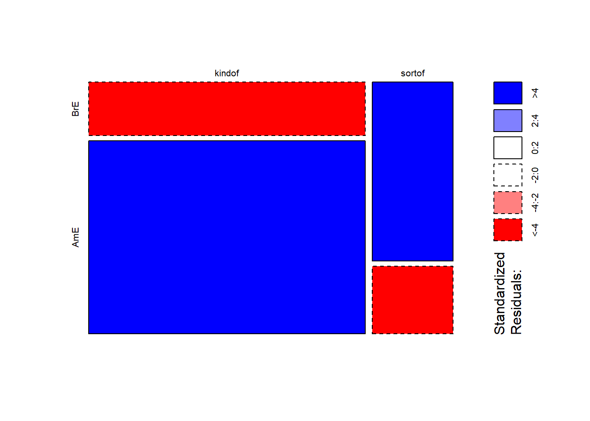
The color contrasts in the mosaic plot substantiate the impression that the two varieties of English differ significantly. To ascertain whether the differences are statistically significant, we can now apply the chi-square test.
# perform chi square test without Yate's correction
chisq.test(chidata, corr = F)
Pearson's Chi-squared test
data: chidata
X-squared = 220.73, df = 1, p-value < 2.2e-16The results reported by R are identical to the results we derived by hand and confirm that BrE and AmE differ significantly in their use of sort of and kind of.
In a next step, we calculate the effect size.
# calculate effect size
sqrt(chisq.test(chidata, corr = F)$statistic / sum(chidata) * (min(dim(chidata))-1))X-squared
0.4520877 The \(\phi\) coefficient of .45 shows that variety of English correlates moderately with the use of sort of and kind of. We will now summarize the results.
8.1.3 Summarizing Chi-Square Results
The results of our analysis can be summarized as follows: A \(\chi\)2-test confirms a highly significant correlation of moderate size between the variety of English and the use of the near-synonymous hedges sort of and kind of (\(\chi\)2 = 220.73, df = 1, p < .001***, \(\phi\) = .452).
8.1.4 Requirements of Chi-Square
Chi-square tests depend on certain requirements that, if violated, negatively affect the reliability of the results of the test. To provide reliable results,
- 80 percent of cells in a table to which the chi-square test is applied have to have expected values of 5 or higher and at most 20 percent of expected values can be smaller than 5 (see Bortz, Lienert, and Boehnke 1990, 98)
- none of the expected values can be smaller than 1 (see Bortz, Lienert, and Boehnke 1990, 136) because then, the estimation, which relies on the \(\chi\)2-distribution, becomes too imprecise to allow meaningful inferences (Cochran 1954).
If these requirements are violated, then the Fisher’s Exact Test is more reliable and offers the additional advantage that these tests can also be applied to data that represent very small sample sizes. When applying the Fisher’s Exact Test, the probabilities for all possible outcomes are calculated and the summed probability for the observed or more extreme results are determined. If this sum of probabilities exceeds five percent, then the result is deemed statistically significant.
8.2 Student’s t-test
There are two basic types of t-tests: the dependent or paired t-test and the independent t-test. Paired t-test are used when the data points are not independent, for example, because they come form the same subjects in a pre-post test design. In contrast, Independent t-tests are used when the data points are independent and come from two different groups (e.g., from learners and native speakers or from men and women).
The assumptions of the Student’s t-test are that
- the dependent variable is a continuous, numeric variable;
- the independent variable is a nominal variable (two levels / groups)
- the variances within each group are approximately normal;
- the errors within each group are approximately normal (this implies that the distributions of the scores of each group are approximately normal).
If the variances are not normal, then this indicates that another important variable is confounding the results. In such cases, you should go back to the data and check what other variable could cause the unequal variances. If you decide to proceed with the analysis, you can switch to a Welch t-test which does not assume equal variances within each group.
Theoretical underpinnings: power, effect size, and variability
Remember that we use t-tests to determine if two groups differ significantly. However, what determines if we find a significant difference? Let us explore this issue in a but more detail and let’s have a look at some distributions to understand what is going on…
Effect size
And let’s start with trying to understand what role effect size plays in finding a significant difference. To this end, we will create numeric vectors for two groups with varying effect size.
Let us start with the distribution of two samples (N = 30) sampled from the same population.
distplot(mean1 = 100, mean2 = 100, sd1 = 10, n = 30, pop = "the same population")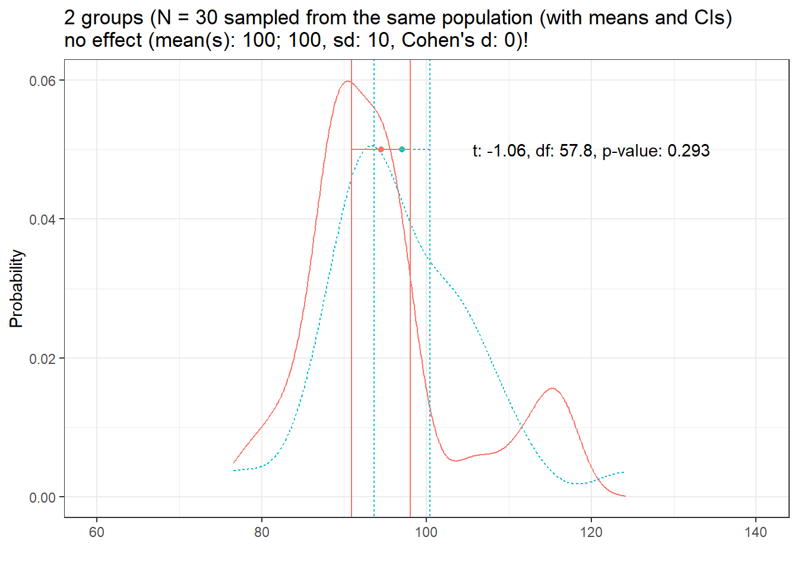
Note that the means are not identical ( the blue and red dots) and we would assume that there may actually be a difference between the groups (i.e., that they are sampled from two different populations). In such cases (and assuming that we actually do not know the population parameters as we do here), we cannot determine if the insignificant result reported by the t-test is due there being no effect or that the result is insignificant because the sample(s) are too small!
Now, lets have a look at at the distribution of two different groups (group has a weak effect, Cohen’s d = .2)
distplot(mean1 = 99, mean2 = 101, sd1 = 10, n = 30, d = .2, effect = "weak", seed = 111)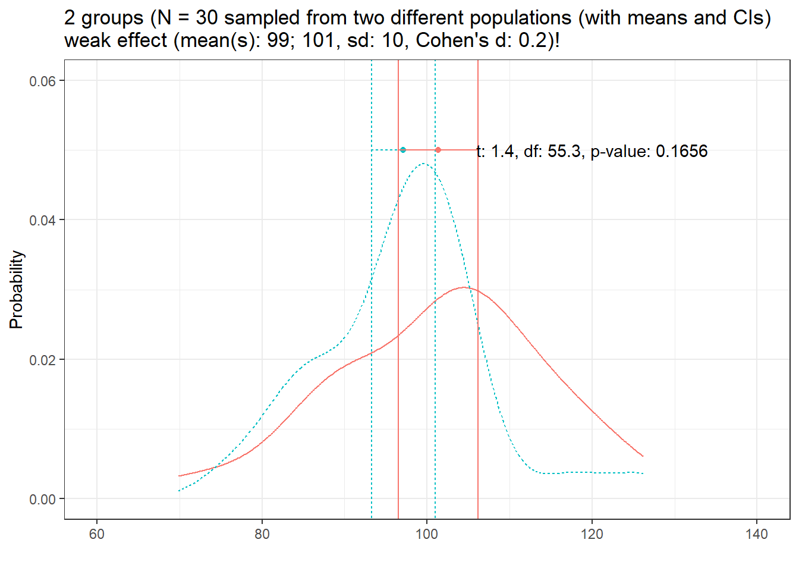
Here, there is actually a difference between the populations form which we have sampled the groups but the t-test fails to confirm that there is a significant difference between the groups (because of the small sample size, the weak effect size, and the variability in the data).
Now, let’s have a look at at the distribution of two different groups (group has a medium effect, Cohen’s d = .5)
distplot(mean1 = 97.5, mean2 = 102.5, sd1 = 10, n = 30, d = 0.5, effect = "medium", seed = 234)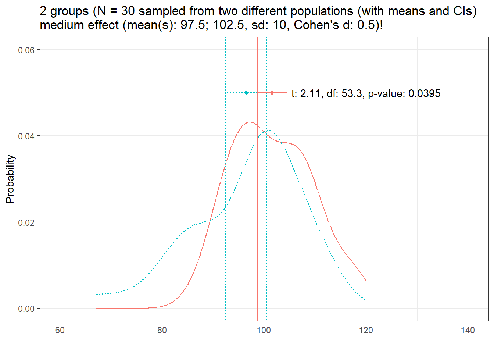
Here we see that the t-test is actually able to detect the difference (meaning that the sample size was sufficient to detect a medium effect in this case. However, the p-value is barely below .05 and we could ask ourselves if we just got lucky or if we would be able to detect the difference with confidence.
Now, lets have a look at at the distribution of two different groups (group has a strong effect, Cohen’s d = .8)
distplot(mean1 = 96, mean2 = 104, sd1 = 10, n = 30, d = 0.8, effect = "strong", seed = 444, ylim = 0.08)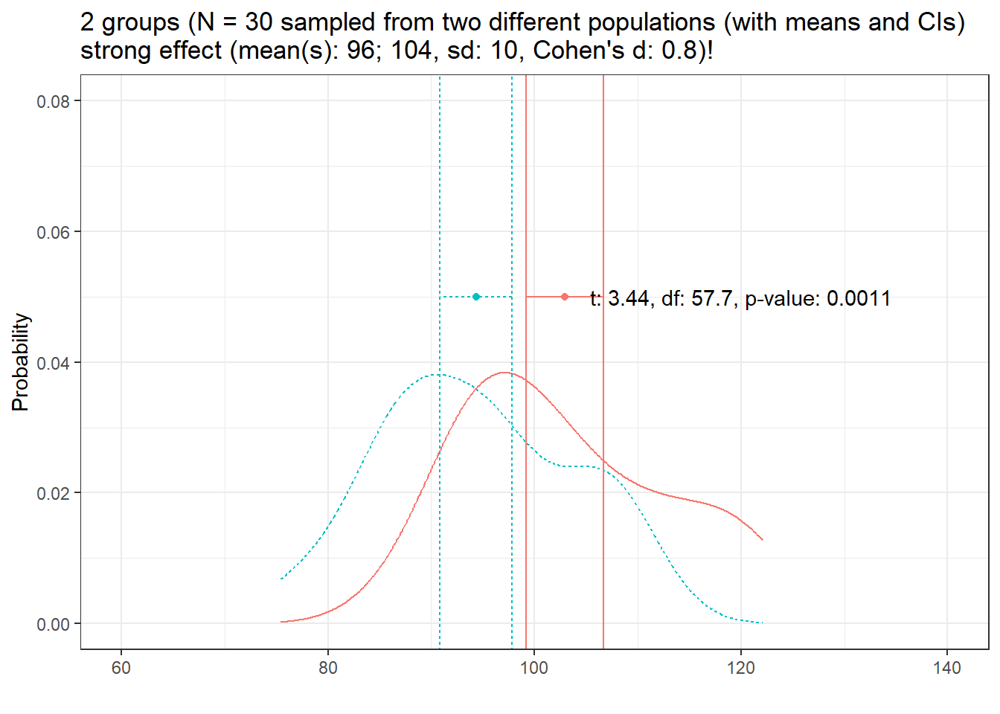
Here the situation is pretty clear cut and given the strong effect, the t-test is able to confirm the difference. Given the substantive difference in the means, it would be very likely that a t-test would repeatedly confirm this difference if we continued to draw samples.
From the above, we can conclude that if variability and sample size remain constant, larger effects are easier to detect than smaller effects!
Sample size
And let’s now look at sample size. In a first example, we draw two samples of 30 observations each. The populations from which the samples are drawn differ with a medium effect size for the difference between groups.
distplot(mean1 = 97.5, mean2 = 102.5, sd1 = 10, n = 30, d = 0.5, effect = "medium", seed = 555)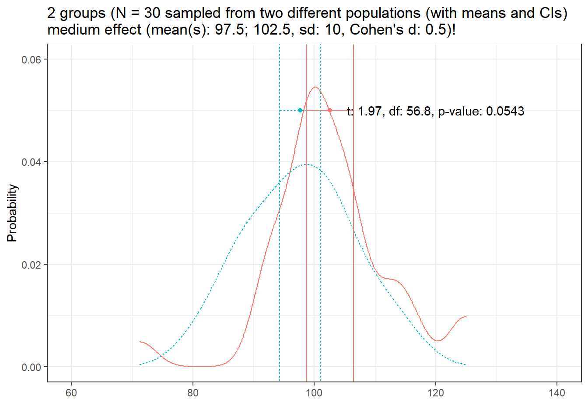
The t-test reports a non-significant result (which is wrong as we know that the populations differ!). This means that we are dealing with a \(\beta\)-error (not detecting an effect although it is there).
Let us now increase the sample size to N = 50.
distplot(mean1 = 97.5, mean2 = 102.5, sd1 = 10, n = 50, d = 0.5, effect = "medium", seed = 888)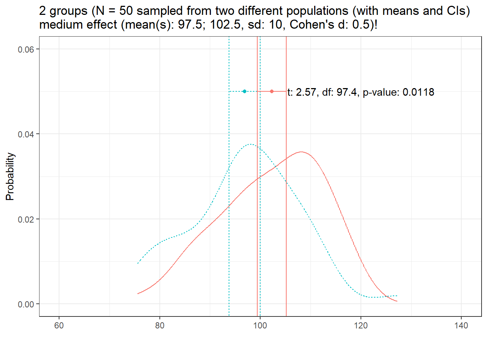
Now the result is clearly significant which means: If variability and effect size remain constant, effects are easier to detect with increasing sample size!
Variability
And let’s now look at variability. Again, we start with a sample size of 30, a medium effect size and equal variances.
distplot(mean1 = 97.5, mean2 = 102.5, sd1 = 10, n = 30, d = 0.5, effect = "medium", seed = 345)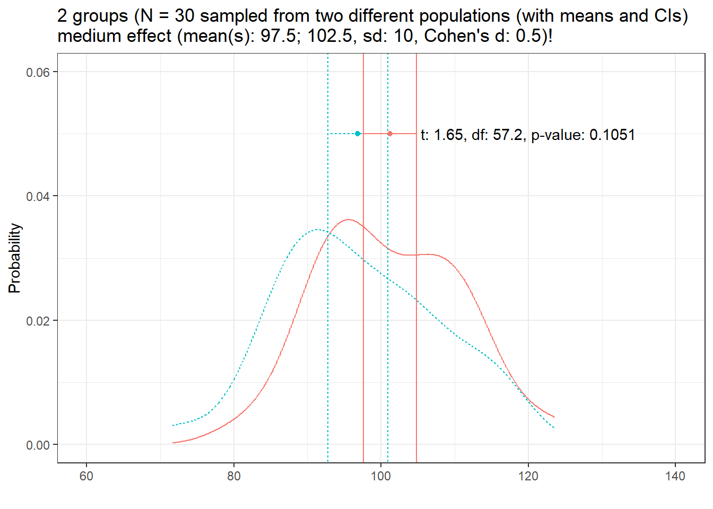
Although we are dealing with a medium effect size, the t-test tells us that the samples do not differ significantly (due to the low sample size and the high variability in the data).
Let’s decrease the variability to sd = 5.
distplot(mean1 = 97.5, mean2 = 102.5, sd1 = 5, n = 30, d = 0.5, effect = "medium", ylim = 0.125, seed = 999)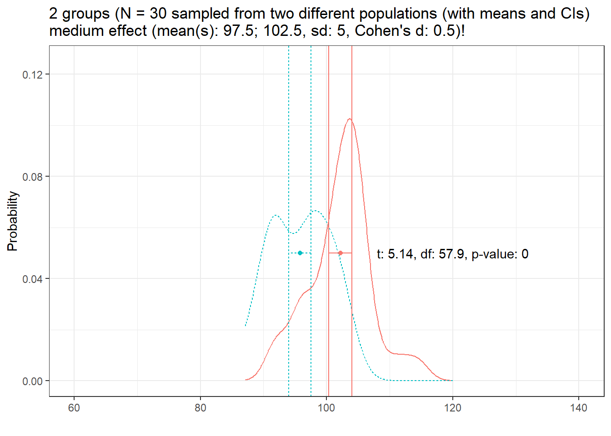
Now, the results is significant which means: If the sample and effect size remain constant, effects are easier to detect with decreasing variability!
In summary, there are three main factors that determine if a model finds an effect. The accuracy (i.e., the probability of finding an effect):
- the size of the effect (bigger effects are easier to detect)
- the variability of the effect (less variability makes it easier to detect an effect), and
- the sample size (the bigger the sample size, the easier it is to detect an effect);
- number of subjects/participants
- number of items/questions
- number of observations per item within subjects/participants
Let us now continue with implementing t-tests in R.
8.2.1 Paired t-test
Paired t-tests take into account that the scores (or values) come from the same individuals in two conditions (e.g. before and after a treatment).There are two equations for the paired t-test that are used.
\[\begin{equation} t = \frac{\sum D}{\sqrt{\frac{N \sum D^2 - (\sum D)^2}{N-1}}} \end{equation}\]
or
\[\begin{equation} t = \frac{\bar D}{\frac{s_D}{\sqrt{N}}} \end{equation}\]
To show how a paired t-tests works, we will test if a treatment (a teaching method) reduces the number of spelling errors in a long essay of 6 students. In a first step, we generate some data representing the errors in two essays of the same length written before and after the teaching method was used for 8 weeks.
Pretest <- c(78, 65, 71, 68, 76, 59)
Posttest <- c(71, 62, 70, 60, 66, 48)
ptd <- data.frame(Pretest, Posttest)The data look like as shown in the table below.
Pretest | Posttest |
|---|---|
78 | 71 |
65 | 62 |
71 | 70 |
68 | 60 |
76 | 66 |
59 | 48 |
Before performing the paired t-test, let us just briefly inspect the mans to see if the means of the pre- and post test differ:
mean(ptd$Pretest)[1] 69.5mean(ptd$Posttest)[1] 62.83333The results show that the mean of the post-test is lower than the mean of the pre-test results.
To perform a paired t-test in R, we use the t.test function and specify the argument paired as TRUE.
t.test(ptd$Pretest,
ptd$Posttest,
paired=TRUE,
conf.level=0.95)
Paired t-test
data: ptd$Pretest and ptd$Posttest
t = 4.1523, df = 5, p-value = 0.00889
alternative hypothesis: true mean difference is not equal to 0
95 percent confidence interval:
2.539479 10.793854
sample estimates:
mean difference
6.666667 In addition to testing if the groups differ significantly, we also want to calculate the effect size of the difference. We can use the effectsize package to extract Cohen’s \(d\) which is the standard effect size measure for t-tests.
effectsize::cohens_d(x = ptd$Pretest,
y = ptd$Posttest,
paired = TRUE)Cohen's d | 95% CI
------------------------
1.70 | [0.37, 2.96]To check if the effect is small or big - that is if a Cohen’s \(d\) value can be interpreted as being small or big, we can use the following overview.
EffectSize | d | Reference |
|---|---|---|
Very small | 0.01 | Sawilowsky (2009) |
Small | 0.20 | Cohen (1988) |
Medium | 0.50 | Cohen (1988) |
Large | 0.80 | Cohen (1988) |
Very large | 1.20 | Sawilowsky (2009) |
Huge | 2.00 | Sawilowsky (2009) |
The classification combines Sawilowsky (2009) and Cohen (1988). The analysis can be summarized using the reports package (Makowski et al. 2021) as follows.
report::report(t.test(ptd$Pretest,ptd$Posttest, paired=TRUE, conf.level=0.95))Effect sizes were labelled following Cohen's (1988) recommendations.
The Paired t-test testing the difference between ptd$Pretest and ptd$Posttest
(mean difference = 6.67) suggests that the effect is positive, statistically
significant, and large (difference = 6.67, 95% CI [2.54, 10.79], t(5) = 4.15, p
= 0.009; Cohen's d = 1.70, 95% CI [0.37, 2.96])We can use this output to write up a final report:
A paired t-test test was applied to the data and it confirmed that the number of spelling errors after the 8 weeks of using the new teaching method significantly decreased (t5: 4.1523, p = .009**). The treatment had a very large, statistically significant, positive effect (Cohen’s \(d\) = 1.70 [CIs: 0.41, 3.25]) (cf. Sawilowsky 2009).
8.2.2 Independent t-tests
Independent t-tests are used very widely and they determine if the means of two groups are significantly different. As such, t-tests are used when we have a normally distributed (or parametric), numeric dependent variable and a nominal predictor variable.
\[\begin{equation} t = \frac{\bar X_1 - \bar X_2}{\sqrt{\frac{s^2_p}{N_1} + \frac{s^2_p}{N_2}}} \end{equation}\]
where
\[\begin{equation} s^2_p = \frac{(N_1 - 1)s^2_1 + (N_2 - 1)s^2_2}{N_1 + N_2 - 2} \end{equation}\]
We now load some data that we can apply a t-test to. The data represents scores on a proficiency test of native speakers and learners of English. We want to use a t-test to determine if the native speakers and learners differ in their proficiency.
# load data
tdata <- base::readRDS(url("https://slcladal.github.io/data/d03.rda", "rb")) |>
dplyr::rename(NativeSpeakers = 1,
Learners = 2) |>
tidyr::gather(Group, Score, NativeSpeakers:Learners) |>
dplyr::mutate(Group = factor(Group))Group | Score |
|---|---|
NativeSpeakers | 6 |
NativeSpeakers | 65 |
NativeSpeakers | 12 |
NativeSpeakers | 56 |
NativeSpeakers | 45 |
NativeSpeakers | 84 |
NativeSpeakers | 38 |
NativeSpeakers | 46 |
NativeSpeakers | 64 |
NativeSpeakers | 24 |
Learners | 67 |
Learners | 16 |
Learners | 56 |
Learners | 34 |
Learners | 54 |
Learners | 42 |
Learners | 36 |
Learners | 47 |
Learners | 54 |
Learners | 29 |
We now apply an independent t-test to the data.
t.test(Score ~ Group,
var.equal = T,
data = tdata)
Two Sample t-test
data: Score by Group
t = -0.054589, df = 18, p-value = 0.9571
alternative hypothesis: true difference in means between group Learners and group NativeSpeakers is not equal to 0
95 percent confidence interval:
-19.74317 18.74317
sample estimates:
mean in group Learners mean in group NativeSpeakers
43.5 44.0 As the p-value is higher than .05, we cannot reject the H0 and we thus have to conclude that our evidence does not suffice to say that learners and Native Speakers differ in their proficiency. However, we still extract the effect size, again using Cohen’s \(d\). In contrast to the extraction of the effect size for paired t-tests, however, we will set the argument paired to FALSE (in fact, we could simply leave it out as the paired = FALSE is the default).
effectsize::cohens_d(tdata$Score ~ tdata$Group,
paired = FALSE)Cohen's d | 95% CI
-------------------------
-0.02 | [-0.90, 0.85]
- Estimated using pooled SD.The analysis can be summarized using the reports package (Makowski et al. 2021) as follows.
report::report(t.test(Score ~ Group, var.equal = T, data = tdata))Effect sizes were labelled following Cohen's (1988) recommendations.
The Two Sample t-test testing the difference of Score by Group (mean in group
Learners = 43.50, mean in group NativeSpeakers = 44.00) suggests that the
effect is negative, statistically not significant, and very small (difference =
-0.50, 95% CI [-19.74, 18.74], t(18) = -0.05, p = 0.957; Cohen's d = -0.03, 95%
CI [-0.95, 0.90])We can use this output to write up a final report:
An independent t-test test was applied to the data and it reported that the scores between the two groups did not differ significantly (t18: -0.0546, p = .9571). In addition to not differing significantly, the effect size of the difference between the groups was also very small (Cohen’s \(d\) = -0.03 [CIs: -0.95, 0.90]) (cf. Sawilowsky 2009).
8.3 Mann-Whitney U-Test
Key concept: Parametric vs. non-parametric tests
Parametric tests (like the t-test) assume that the data follow a particular distribution (typically the normal distribution) and use the actual values in their calculations, which gives them more statistical power when the assumptions hold. Non-parametric tests (like the Mann-Whitney U-test) work on ranks instead of raw values and make far weaker distributional assumptions - the robust fallback when data are skewed, ordinal, or contain outliers. The price of this robustness is somewhat lower power when the parametric assumptions would in fact have been met.
It is actually quite common that numeric depend variables need to be transformed or converted into ranks, i.e. ordinal variables, because the distribution of residuals does not allow the application of parametric tests such as t-tests or linear regression. In such cases, as we are dealing with rank (ordinal) data, the application of a chi-square test is unwarranted and we need to use another test. There are different alternatives depending on whether the data are paired (coming from the same individuals) or if all observations are independent.
The non-parametric alternative for independent t-tests, i.e. for data where we are dealing with two separate groups and a numeric dependent variable that violates parametric assumptions (or an ordinal dependent variable), is the Mann-Whitney U-test. In contrast, if the groups under investigation represent identical participants that are tested under two conditions, the appropriate alternative is a Wilcoxon Signed Rank test (which is thus the alternative for paired t-test).
Imagine we wanted to determine if two language families differed with respect to the size of their phoneme inventories. You have already ranked the inventory sizes and would now like to now if language family correlates with inventory size. As such, we are dealing with two independent groups and we want to implement a non-parametric alternative of a t-test. To answer this question, you create the table shown below.
LanguageFamily refers to the language family that a language belongs to and Rank represent the rank of language based on its phoneme inventory size (1 = largest phoneme inventory, 20 = smallest phoneme inventory).
# create table
Rank <- c(1,3,5,6,8,9,10,11,17,19, 2,4,7,12,13,14,15,16,18,20)
LanguageFamily <- c(rep("Kovati", 10), rep("Urudi", 10))
lftb <- data.frame(LanguageFamily, Rank)LanguageFamily | Rank |
|---|---|
Kovati | 1 |
Kovati | 3 |
Kovati | 5 |
Kovati | 6 |
Kovati | 8 |
Kovati | 9 |
Kovati | 10 |
Kovati | 11 |
Kovati | 17 |
Kovati | 19 |
Urudi | 2 |
Urudi | 4 |
Urudi | 7 |
Urudi | 12 |
Urudi | 13 |
Urudi | 14 |
Urudi | 15 |
Urudi | 16 |
Urudi | 18 |
Urudi | 20 |
We will also briefly inspect the data visually using a box plot.
library(ggplot2)
ggplot(lftb, aes(x = LanguageFamily, y = Rank, fill = LanguageFamily)) +
geom_boxplot() +
scale_fill_manual(values = c("orange", "darkgrey")) +
theme_bw() +
theme(legend.position = "none")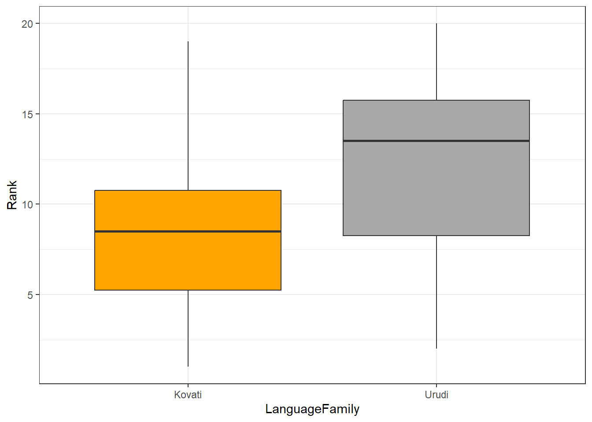
To use the Mann-Whitney U test, the dependent variable (Rank) must be ordinal and independent variable (Group) must be a binary factor. We briefly check this by inspecting the structure of the data.
# inspect structure
str(lftb)'data.frame': 20 obs. of 2 variables:
$ LanguageFamily: chr "Kovati" "Kovati" "Kovati" "Kovati" ...
$ Rank : num 1 3 5 6 8 9 10 11 17 19 ...As the variables are what we need them to be, we can now perform the Mann-Whitney U test on the table. The null hypothesis is that there is no difference between the 2 groups.
# perform test
wilcox.test(lftb$Rank ~ lftb$LanguageFamily)
Wilcoxon rank sum exact test
data: lftb$Rank by lftb$LanguageFamily
W = 34, p-value = 0.2475
alternative hypothesis: true location shift is not equal to 0Since the p-value is greater than 0.05, we fail to reject the null hypothesis. The results of the Mann-Whitney U test tell us that the two language families do not differ significantly with respect to their phoneme inventory size.
The analysis can be summarized using the reports package (Makowski et al. 2021) as follows.
report::report(wilcox.test(lftb$Rank ~ lftb$LanguageFamily))Effect sizes were labelled following Funder's (2019) recommendations.
The Wilcoxon rank sum exact test testing the difference in ranks between
lftb$Rank and lftb$LanguageFamily suggests that the effect is negative,
statistically not significant, and large (W = 34.00, p = 0.247; r (rank
biserial) = -0.32, 95% CI [-0.69, 0.18])We can use this output to write up a final report:
The Wilcoxon rank sum exact test suggests that there is no statistically significant relationship between the size of phoneme inventories and being member of selected language families. Despite being statistically insignificant, the effect may be large (W = 34.00, p = 0.247; r (rank biserial) = -0.32, 95% CI [-0.69, 0.18]).
Mann-Whitney U tests with continuity correction
The Mann-Whitney U test can also be used with continuity correction. A continuity correction is necessary when both variables represent numeric values that are non-normal. This is quite handy because it means that we do not need to convert our numeric dependent variable into ranks (an ordered variable). In the following example, we want to test if the reaction time for identifying a word as real is correlated with its token frequency.
For this example, we generate data is deliberately non-normal.
Frequency | Reaction |
|---|---|
25,485.43 | 395.2039 |
24,468.44 | 370.9637 |
24,218.94 | 412.2960 |
20,405.75 | 425.7529 |
19,020.88 | 412.9506 |
17,363.19 | 404.0559 |
17,319.49 | 401.1195 |
17,042.85 | 434.8484 |
15,527.19 | 390.0054 |
14,233.21 | 456.4710 |
When we plot the data, we see that both the frequency of words (Frequency) and the reaction times that it took subjects to recognize the token as a word (Reaction) are non-normal (in this case, the distributions are negative skewed).
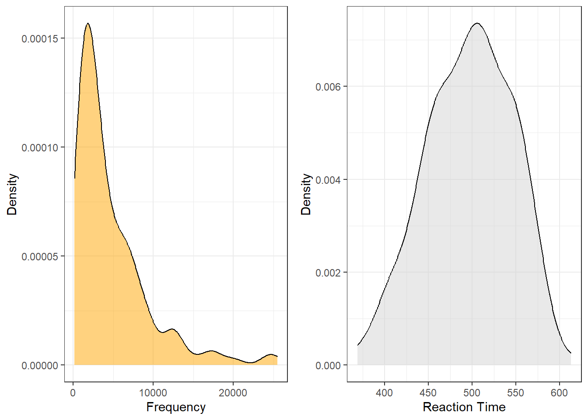
Both variables are negatively skewed (non-normally distributed) but we can use the wilcox.test function to perform the Mann-Whitney U test with continuity correction which takes the skewness into account.
wxdata |>
ggplot(aes(Frequency, Reaction)) +
geom_point() +
geom_smooth(method = "lm")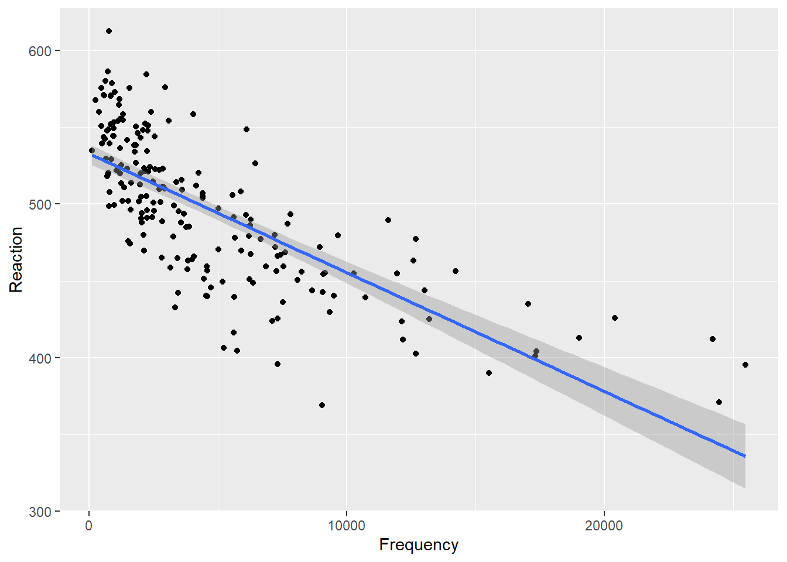
The null hypothesis is that there is no correlation between token frequency and reaction time. The output states that the test that was performed is a Wilcoxon rank sum test with continuity correction which is just a different name for the Mann-Whitney U test - this is because the nomenclature for the tests is not unanimous.
# perform test
wilcox.test(wxdata$Reaction - wxdata$Frequency)
Wilcoxon signed rank test with continuity correction
data: wxdata$Reaction - wxdata$Frequency
V = 81, p-value < 0.00000000000000022
alternative hypothesis: true location is not equal to 0Again, we use the reports package (Makowski et al. 2021) to summarize the analysis.
report::report(wilcox.test(wxdata$Reaction - wxdata$Frequency))Effect sizes were labelled following Funder's (2019) recommendations.
The Wilcoxon signed rank test with continuity correction testing the difference
in rank for wxdata$Reaction - wxdata$Frequency and true location of 0 suggests
that the effect is negative, statistically significant, and very large (W =
81.00, p < .001; r (rank biserial) = -0.99, 95% CI [-0.99, -0.99])We can use this output to write up a final report:
The Wilcoxon signed rank test with continuity correction suggests that there is a strong, negative, statistically significant relationship between the reaction time for identifying a word as real and its token frequency (W = 276.00, p < .001; r (rank biserial) = -0.97, 95% CI [-0.98, -0.96]).
Exercises: Basic Inferential Statistics
Q1. You want to test whether the use of a discourse particle (yes/no) is associated with speaker gender (male/female). Which test is appropriate?
Q2. A t-test comparing essay scores of two groups yields p = .001 with n = 10,000 per group. What should you check before concluding that the difference matters?
Q3. Your reaction-time data are heavily right-skewed with several extreme outliers. You want to compare two groups. What is the most defensible choice?
Bortz, J, GA Lienert, and K Boehnke. 1990. Verteilungsfreie Methoden in Der Biostatistik. Berlin: Springer Verlag.
Bühner, Markus, and Matthias Ziegler. 2009. Statistik für Psychologen Und Sozialwissenschaftler. München: Pearson Studium.
Cochran, W. G. 1954. “Some Methods for Strengthening the Common $$^2tests.” Biometrics 10: 417–51.
Cohen, Jacob. 1988. Statistical Power Analysis for the Behavioral Sciences. Hillsdale, NJ: Erlbaum.
Makowski, Dominique, Mattan S. Ben-Shachar, Indrajeet Patil, and Daniel Lüdecke. 2021. “Automated Results Reporting as a Practical Tool to Improve Reproducibility and Methodological Best Practices Adoption.” CRAN. https://github.com/easystats/report.
Sawilowsky, Shlomo S. 2009. “New Effect Size Rules of Thumb.” Journal of Modern Applied Statistical Methods 8 (2): 26.